This post is chapter 7 of the report "Microarchitecture of the Apple M6 Neural Engine: An Empirical Study Based on Compiled Artifacts, Execution Traces, and Power Measurements", reproduced unchanged. Full report: web; data and tools: GitHub. Section, figure and table numbers follow the report.
7.1 Test Methodology
The quantity of interest in this chapter is the performance of the MAC array and the PE, but through Core ML only the total time of each call can be observed. That total time includes, besides the computation itself, a fixed overhead of one to two hundred microseconds, which consists of host-side time for submission and completion notification together with the CPU wake-up time that varies with task duration, as described in Chapter 6. When the number of layers is small, this overhead can also overlap with the computation. If the total time of a single model is divided by its amount of compute, the resulting throughput is severely depressed by the fixed overhead and varies with model size. We therefore need a method that separates the per-layer computation time from the total time that the Core ML interface provides.
We use the slope method. Specifically, within each test the shape of every layer is held fixed while only the number of layers is varied. The slope of per-call time against the number of layers serves as the marginal time per layer, and the marginal throughput is then computed from the number of MACs per layer. Because the fixed overhead is independent of the number of layers, it cancels in the slope. To ensure that the measured marginal time reflects only computation, unless stated otherwise, all layers of a model share one set of weights, which keeps the weights resident on chip and thereby eliminates the influence of weight-read bandwidth (model generation: chain.py; timing: runall.sh, bondrun.m) 〔timing〕.
The slope method is valid only when all points in a set of measurements are in the same execution state. On the ANE, however, four conditions break this premise, and each must be excluded experimentally. First, each call has a floor of about 160 µs. A model whose total workload falls below this floor has a time that barely varies with the number of layers, so the slope obtained from it is meaningless; we therefore use only layer counts whose total workload clearly exceeds the floor. Second, the ANE requires a ramp-up period to go from idle to full speed. Section 11.2.3 measures that the NE clock rises from 852 MHz to above 2448 MHz over about 124–146 ms of ANE execution time, and Chapter 12 explains that the CLPC controls this process. If sampling occurs during ramp-up, models with different numbers of layers sit at different clock states, so before each measurement we run at least 1 s of continuous calls as a warm-up. Third, when the number of layers is varied, the compiler may switch between single-ANE and dual-ANE programs (Section 5.8). The two points on either side of such a switch cannot be used together to fit a slope, so we use the per-ANE interrupt counts in IOReport to confirm the number of engines used at each point. Fourth, Core ML sometimes runs an entire model, or part of its operations, on the CPU without giving any indication. We therefore treat an ANE interrupt count of zero as the identifying flag and discard those points 〔IOReport〕.
Even when these conditions are met, host-side time can still contaminate the timed slope. Section 6.5 shows that the host wake-up overhead after task completion increases with task duration, and task duration increases with the number of layers, so this overhead also appears as a per-layer time. For such measurements, we instead use the firmware-recorded timestamps in kdebug, taking either the interval between ANE task-end events or the "submit → task end" duration (Table 6-1). This gives the execution time of the ANE itself directly 〔kdebug〕. Wherever this chapter reports a result obtained from firmware timestamps, the text says so.
Measurements show how fast the array runs, but they do not directly explain why it runs at that speed. To interpret the measurements, we collected two kinds of evidence from the compiler side. The first is the compiled artifact itself. From each convolution TD in the HWX, one can read the input and output shapes, the size of the output-channel group, and exe_cycles (Chapter 5). These fields reflect how the compiler allocates a layer across the 16 NE cores. The second is the compiler's built-in per-TD performance model. Its estimates are normally emitted only on Apple-internal builds of the system. The compile option DebugMask passes through a check, os_variant_has_internal_content("com.apple.ane"), before it is parsed, and on retail systems this check returns false, so the option is ignored. We wrote a dynamic library (anevariant.c) that, injected through DYLD_INSERT_LIBRARIES, makes this check return true only inside our own compilation process. This yields the performance-model estimate for each TD (tool: perfcsv.py; data: perfcsv/) 〔compiler〕.
The two kinds of evidence are used together in this chapter. The compiler side supplies the structural parameters of the hardware and the compiler's performance expectations, and the measurement side tests whether these parameters and expectations hold. Only conclusions on which both sides agree are stated as properties of the hardware. Content that appears only in the compiler, and that cannot be verified by measurement through Core ML, is explicitly marked as supported by compiler evidence alone. An example is the higher MAC tier described in Section 7.2.3.
7.2 Multiply-Accumulate Operations per NE per Cycle
7.2.1 FP16
We measure the FP16 throughput of a single ANE with a 1×1 convolution chain (512 channels, spatial extent 1×128, with weights shared across layers). This shape is not split across two ANEs, its weights are resident in the NE weight buffer, and its activations remain in L2, so the throughput is limited only by the MAC array. When the number of layers increases from 256 to 384, the marginal time per layer is 3.26 µs, corresponding to a marginal throughput of 20.6 TFLOPS. When the width is doubled to 256, the compiler splits each layer across the two ANEs. The workload per ANE is the same as in the single-ANE case, the marginal time per layer is 3.40 µs, and the marginal throughput is 39.5 TFLOPS, which is 1.92× the single-ANE value (data: bond_ksweep_run.txt; Chapter 10) 〔timing〕. The relation between ANE task duration and amount of compute measured with kdebug is 49.0 µs per GFLOP, equivalent to 20.4 TFLOPS, which agrees with the timing slope (Section 6.5.2) 〔kdebug〕.
To convert the measured throughput into a number of MACs per NE per cycle, the full-load clock frequency of the ANE is also required. The system does not provide a frequency reading for the ANE. We obtain this value in Section 11.2.2 from a separate, independent measurement. The ANE starts from idle and runs the same model continuously, and we record the steps in kdebug task duration during ramp-up. Using only the five lowest DVFS states, which are identical in both frequency tables, we fit "duration = constant ÷ frequency + fixed term" and constrain the fit with an independently estimated fixed term limited to 5–12 µs. We then extrapolate to the full-load state, obtaining 2578–2584 MHz. This fit uses only the inverse relation between task duration and frequency and does not depend on any assumption about MAC width made in this section, so using it to convert MAC width does not constitute circular reasoning. Taking 2.58 GHz, the number of MACs per NE per cycle is 20.6 × 10¹² ÷ (2 × 16 × 2.58 × 10⁹) ≈ 249.5. This value differs from 256 by 2.5%, whereas it differs greatly from other candidate values such as 128 or 512. We therefore infer that each NE completes 256 FP16 MACs per cycle, so the direct-convolution peak of a single ANE is 16 × 256 × 2 × 2.58 GHz = 21.1 TFLOPS, and the measured throughput reaches 97.5% of this peak 〔timing, kdebug, inferred〕. The compiler-side estimate is consistent with this value. At the base tier described in Section 7.2.3, the performance model assumes 256 FP16 MACs per NE per cycle. The exe_cycles of a 1×1, 512-channel, 64×64 FP16 TD is 104, which, converted at the measured 20.6 TFLOPS, corresponds to almost exactly 104 µs 〔compiler〕.
7.2.2 INT8
The MAC width for INT8 can be inferred from the following three lines of evidence.
First, the compiler's performance model contains the function perfmodel::GetNumOutputChannelsPerAccumulator, which returns the number of output channels computed simultaneously by each accumulator. We disassembled this function and ToPerfHwParams, which supplies its arguments, and obtained the logic listed in Table 7-1 〔compiler〕.
Table 7-1. Number of output channels computed simultaneously by each accumulator (compiler performance model)
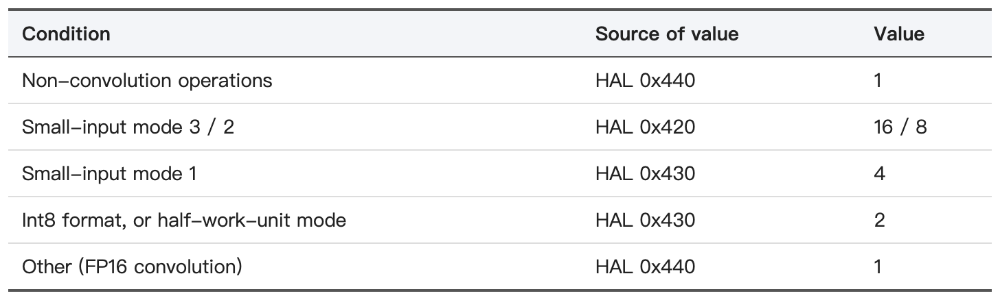
Table 7-1 shows that each accumulator computes one output channel for FP16 convolution and two for INT8 convolution. These parameters take the same values on H16, H17, H18, and H19.
Second, the exe_cycles values of the TDs in the compiled artifact and the TD shapes give the same ratio. We compiled the same single-layer convolution (3×3, 512 channels, 64×64) into three versions, FP16, W8 (weights-only quantization), and W8A8, and computed the number of MACs per unit of exe_cycles for each convolution TD. The values are 10.3 M for both FP16 and W8, and 20.8 M for W8A8, approximately twice the former (tools: macw.py, macw_td.py; data: macw_td.txt) 〔compiler, HWX〕. The fact that W8 matches FP16 indicates that, when only the weights are quantized, the INT8 weights are converted to FP16 before they enter the MAC array.
Third, the measured throughput exceeds the FP16 limit. To avoid interference from the hardware Winograd path and from activation bandwidth, we select only 1×1 convolutions (with at least 1024 channels, so that each byte of activation corresponds to enough MACs) and 3×3 convolutions with dilation rate 2, which do not use Winograd. We convert the throughput to MACs per NE per cycle using the number of engines, the 16 NE cores, and 2.58 GHz. The results are shown in Table 7-2 (tools: mac3.py, mac3_fit.py; data: mac3_run.txt) 〔timing〕.
Table 7-2. MACs per NE per cycle for FP16 and W8A8 (measured)
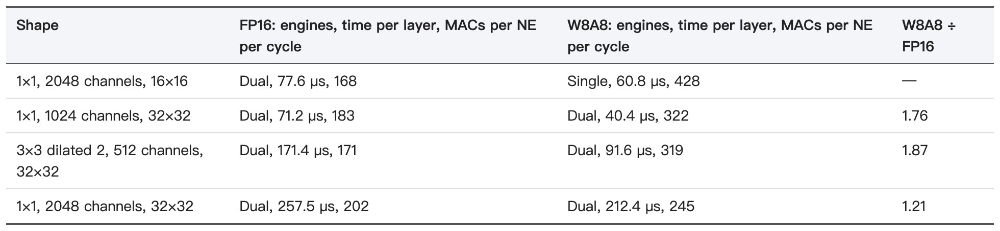
The first row is the most important. The W8A8 version uses only one ANE and reaches 428 MACs per NE per cycle, which is 35.4 TOPS for a single ANE. A 1×1 convolution does not use Winograd, so the FP16 limit is 256, and the INT8 MAC width must therefore be greater than 256. The value 428 corresponds to 84% of 512. The last row is only 1.21× faster because the compiler assigns the W8A8 version to the two ANEs in a ratio of roughly 1:2. In the dual-ANE program, the sums of exe_cycles for the two ANEs are 434 and 880. Calculated on ANE1, which carries the larger workload, the value is 326 MACs per NE per cycle. The DRAM read bandwidths of the two ANEs are only 7.8 and 15.6 GB/s, respectively, so neither is bandwidth-limited (defect B8) 〔HWX, timing〕. On the two shapes where both ANEs participate and the split is even, W8A8 is 1.76 to 1.87 times FP16. The utilization of each format against its own limit (512 and 256, respectively) is also similar, at 62–63% and 67–72%.
Combining the three lines of evidence, we infer that with INT8 each NE completes 512 MACs per cycle. In other words, the number of cells in the MAC array is unchanged, and each accumulator computes two output channels at INT8. Accordingly, the direct-convolution peak of a single ANE is 42.3 TOPS for INT8, and that of two ANEs is 84.5 TOPS 〔compiler, HWX, timing, inferred〕. This conclusion is consistent in ratio with the description given by Bryngelson [5], in which INT8 packing outputs "8 channels per core per cycle" and FP16 outputs 4.
7.2.3 Higher Tiers in the Performance Model
The CSV of the performance model shows that the compiler assumes a higher MAC width for some shapes: 512 MACs per NE per cycle for FP16 and 1024 MACs per NE per cycle for INT8. After analyzing the CSVs of 56 single-layer convolutions and several chained models, we found that the tier depends on the work unit (WU) size that the compiler selects for the TD. The number of MACs per NE per cycle is approximately twice the number of pixels per WU, and this relation holds identically for FP16 and INT8. For FP16, a WU of 128 pixels gives 256 MACs and a WU of 256 pixels gives 512 MACs. For INT8, a WU of 256 pixels gives 512 MACs and a WU of 512 pixels gives 1024 MACs. The larger the spatial size, the more likely the compiler is to select a large WU (data: perfcsv/) 〔compiler〕.
We attempted to verify the higher tiers by measurement, and the result was negative. Measuring ANE task duration with kdebug, an FP16 2×2 convolution (256 channels, 32×64) gives 257 MACs per NE per cycle, and the same shape in INT8 gives 413 (data: hi_kt/; tool: hi_fit.py) 〔kdebug〕. The reason is that these models all execute as dual-ANE programs at run time, with row-wise splitting, so each ANE receives only half of the rows and its WU is halved accordingly. The rows of the CSV that correspond to dual-ANE programs give precisely the base tier (256 for FP16, 512 for INT8), which agrees with the measurements. We did not find any shape for which Core ML executes a single-ANE program with a large WU. After splitting, every block of these shapes exceeds 128 pixels, and under the cost model of Section 5.8.3 the compiler always chooses to split. When two processes execute the same model simultaneously, the driver lets the two processes take turns using the two ANEs, and the programs still execute as dual-ANE programs; the driver did not reassign them to single-ANE programs (data: hi2_kt/) 〔kdebug〕. Therefore, the higher tier exists only for large-WU shapes in single-ANE programs. On the M6, all programs actually executed through Core ML fall at the base tier.
7.3 Weight Buffer and Output-Channel Grouping
7.3.1 Output-Channel Grouping
The number of output channels that each NE computes per pass is called the output channel group (OCG) size. A TD may execute multiple passes, so the OCG differs from the number of output channels of the TD. We disassembled the function in the v24 layout that configures the NE and determined that register 0x10 is the NE configuration register. Its bits 0–2 record the OCG size as a base-2 logarithm, and bit 6 is the half-work-unit mode. Field tracing shows that the half-work-unit mode is enabled only in W8A8, and that the OCG of depthwise and grouped convolutions is 1 and 2, respectively (Table 5-13). We then compiled single-layer convolutions with kernel shapes 1×1, 1×3, 3×1, 2×2, 3×3, 5×5, and 7×7, input channels from 16 to 512, and precisions FP16 and W8A8 (spatial size 32×32), and read the OCG of each TD. Table 7-3 gives the FP16 results (tool: ocg.py; data: ocg_table.txt) 〔compiler, HWX〕.
Table 7-3. OCG size for FP16 convolution
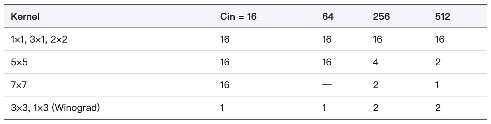
Except for Winograd convolutions, the OCG values in Table 7-3 all satisfy the following relation:
OCG = min(16, the largest power of 2 such that OCG × Cin × kH × kW × 2 B ≤ 64 KiB)
For example, a 2×2 convolution with 512 channels has exactly 16 × 512 × 4 × 2 B = 64 KiB. The OCG for W8A8 is likewise limited by 64 KiB, except that each weight is counted as 1 byte. This is a further independent piece of evidence that each NE has a 64 KiB weight buffer. It agrees with the conclusion drawn in Section 5.6 from the number of TDs for larger inputs, and with the 64 KiB "resident-weight limit" in the HAL parameter table. Winograd convolutions have very small OCGs (1–2) and are not limited by the weight buffer. For a 3×3 convolution with 256 channels, the transformed weights amount to only 2 × 256 × 16 × 2 B = 16 KiB per NE per pass. We conjecture that they are limited by accumulator capacity, because each output must accumulate a 4×4 block in the transform domain 〔inferred〕.
In this set of models with a 32×32 spatial extent, the OCG upper limit of 16 agrees with the NE work unit of 16 in the HAL, and from this we had conjectured that the 256 MACs per NE per cycle are organized as 16 output channels × 16 input channels (or 16 pixels). Section 7.3.4 shows that neither conjecture holds, and that the OCG reaches 32 when there are few pixels. The accumulator file depth of "8" reported by Bryngelson [5] has no direct counterpart in the M6 OCG, and the units of the two may differ.
7.3.2 Steps in the Output-Channel Count
With 128 pixels per work unit the OCG upper limit is 16, and each ANE contains 16 NE cores, so a single pass can cover at most 256 output channels. When the number of output channels exceeds 256, the computation must be completed in multiple passes, and the input data are reread in each pass. To verify this, we measured the per-call time of a 1×1 convolution chain (spatial extent 1×128, single ANE, weights shared across layers) as the channel count C increases from 192 to 1024 in steps of 16. For each channel count we measured two models, with 32 and 160 layers (data: b2b_run.txt) 〔timing〕. The models with these two layer counts often fall in two different host wake-up states described in Section 6.5, in which the interrupt count per call is about 2 for one and about 3 for the other. Computing the per-layer time from the difference of two points incorporates the difference in overhead caused by the state switch, so the absolute value obtained is too large. For example, at 512 channels it is 4.69 µs, whereas Section 7.2.1 measures 3.26 µs for the same shape over the 256–384-layer range, where both points are in the same state. We therefore do not use the difference of two points. Instead, we compare only measurement points in the same state. For C from 192 to 352, the interrupt count per call of the 160-layer model is about 3 throughout, so these points are in the same state, and their per-call times are given in Table 7-4.
Table 7-4. Per-call time of the 160-layer 1×1 convolution chain versus channel count (same host wake-up state)
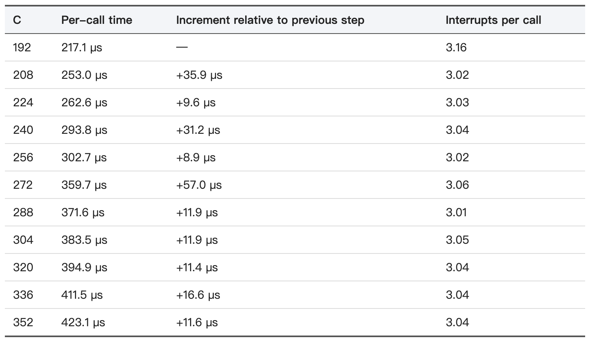
In Table 7-4, when C increases from 256 to 272, the per-call time increases by 57.0 µs, which is the largest increment up to 352. The steps from 272 to 352 each add only 11–17 µs per 16 channels, whereas the increments below 256 alternate between about 9 µs and 31–36 µs. The position of this step corresponds exactly to the limit of 256 output channels per pass, and it is consistent with the output-channel grouping of the compiled artifact (Section 7.3.1). However, the increments below 256 themselves alternate between about 9 µs and 31–36 µs. This report has not explained the source of this alternation, and the existing data cannot fully exclude that part of the increment at 272 comes from the same alternation. Therefore, the correspondence between the step and 256 channels per pass remains an inference 〔timing, HWX, inferred〕. Because the existing data cannot yield an accurate per-layer time, this report does not give the magnitude of the step as a percentage. Bryngelson [5] reports that on the M1 the time becomes 3 times larger when the output-channel count increases from 192 to 256, and the M6 shows no such steep step. We conjecture that the reason is that the input tensor of this shape is very small (256 KB when C = 1024), fully resides in L2, and the cost of rereading the input is small 〔inferred〕. Figure 7-1 shows the per-call time of the 160-layer model as a function of channel count.
The case above 352 cannot be judged by the same method. The three steps from 368 to 400 remain in the same wake-up state (interrupt counts 3.00–3.26), but their increments are generally larger: 352 → 368 is +51.4 µs and 384 → 400 is +68.1 µs, both larger than 256 → 272. This report does not provide an analysis of the cause at present. Therefore, the only supportable statement is that the 256 → 272 step is prominent within 352, not that it is the only step over the entire range 〔timing〕. At 400 → 416, the interrupt count of the 160-layer model drops from 3.00 to 2.03, and thereafter it is largely in another wake-up state (with the exception of C = 832, where the interrupt count is 3.01). Increments across this switch cannot be compared directly. The 512 → 528 and 768 → 784 points also show large increments, but the 160-layer models happen to lie between two states at these points (interrupt counts 2.34 and 2.08, respectively, and C = 960 shows a similar situation), so it cannot be confirmed whether they are real steps.
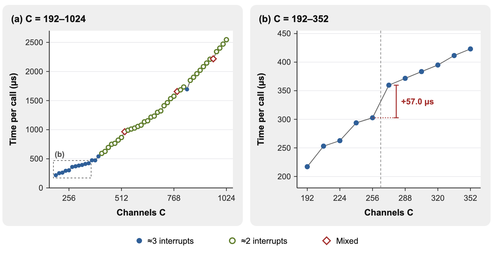
Figure 7-1. Per-call time of the 160-layer 1×1 convolution chain (1×128, single ANE) as a function of channel count C. (a) C = 192–1024. Markers distinguish host wake-up states by the interrupt count per call; at the diamonds, the two states are mixed, and the increments on either side cannot be confirmed as real steps. (b) Enlarged view of the range of Table 7-4. When C increases from 256 to 272, the per-call time increases by 57.0 µs (data: b2b_run.txt).
7.3.3 Utilization with Few Output Channels
The compiler divides a layer across the 16 NE cores by output channel. We measured the marginal throughput of 1×1 convolution chains with 32–256 channels at a very large spatial extent (1×8192, split across two ANEs): 14.3 TFLOPS at 32 channels, 23.6 TFLOPS at 64 channels, 31.6 TFLOPS at 96 channels, and 35.7 TFLOPS at 192 channels (data: group1_run.txt) 〔timing〕. The compiled artifacts show that at 16, 32, and 64 channels the weights are split into 16 parts, and at 16 channels each NE receives one output channel. In other words, as long as the number of output channels is at least 16, all 16 NE cores are enabled. When the number of channels is small, the throughput is low. We conjecture that the reason is the small workload per NE and the short accumulation length, not that any NE is idle 〔HWX, timing, inferred〕.
For layers with few channels and a large spatial extent, array utilization is generally low, so one may consider rearranging the data to convert the spatial dimension into the channel dimension, thereby improving utilization. The space_to_depth (S2D) transformation is such a rearrangement. Table 7-5 compares the throughput before and after the transformation for a 32-layer 1×1 convolution chain with 64 channels and a 128×128 spatial extent, and it compares these results with the M4 results of maderix [4] (tool: s2d.py; data: b8_s2d_run.txt) 〔timing〕.
Table 7-5. Effect of space_to_depth on throughput (32-layer 1×1 convolution chain)
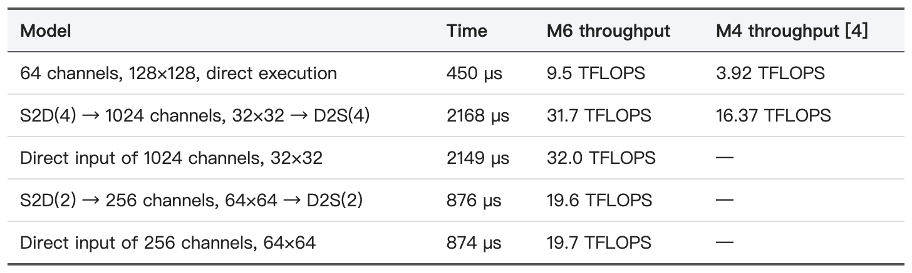
S2D(4) raises throughput to 3.3× the original. Compared with a model whose input is directly the transformed shape, the overhead of S2D and D2S is about 0.9% for block = 4 and about 0.2% for block = 2. maderix [4] reports that on the M4 the compiler implements S2D(2) as a convolution with one-hot weights, with an overhead of 2.8–3.1%; this problem does not occur on the M6.
The models before and after transformation in Table 7-5 are not equivalent. The 1×1 convolution after S2D(4) acts on 1024 channels, so each layer has 16 times the compute of the original model (1024² × 32² versus 64² × 128²) and 256 times the weights. The semantics of the model also change: it mixes all channels within each 4×4 block of pixels, whereas the original model mixes channels only within a single pixel. Therefore, although throughput increases by 3.3×, the total time increases from 450 µs to 2168 µs. To implement the original model exactly with S2D, the transformed convolution weights must form a block-diagonal matrix composed of 16 identical 64×64 blocks. Executed as an ordinary convolution, this still requires 16 times the compute, and the total time does not shorten; using a grouped convolution instead keeps the amount of compute unchanged. The conclusion supported by Table 7-5 is therefore the following. On the ANE, shapes with many channels and small spatial extent utilize the MAC array better than shapes with few channels and large spatial extent, and the overhead of S2D and D2S themselves is negligible. Table 7-5 does not show that inserting S2D into an existing model speeds it up. The conclusion is more meaningful for model design. For example, when designing a network, one may replace an early high-resolution, few-channel stage with a structure that first reduces resolution and then increases the number of channels, such as patch embedding 〔timing, inferred〕.
7.3.4 Organization of MACs within an NE
Section 7.3.1 left open how the 256 MACs per NE per cycle are distributed over output channels, input channels, and pixels. We examined this question from both the compiler's performance model and timing. These supplementary experiments were run in the same environment as the supplementary measurements in Section 7.5 (macOS 27.2.1, ANE compiler 10.205.4). Timing uses the slope of the Core ML per-call time with respect to layer count, averaged over one forward-order and one reverse-order round (tools: chain.py, ne_cin_gen.py, ne_time.sh, ne_fit.py, perfcsv.py; data: ne_org/).
The compiler's performance model first presents a picture that matches neither conjecture. For a 1×1 convolution with C = 512 and a spatial extent of 1×P, the MAC cycles per work unit do not vary linearly with the pixel count but jump in blocks: 2049 for every P from 8 to 32, 4097 for P = 33–64, and 8193 for P = 96–128, while the OCG drops from 32 to 16. How the pixels are arranged across rows also affects the block size: for the same 32 pixels, 4×8, 2×16, and 1×32 have the same cycle count, while 8×4 doubles it and 16×2 quadruples it. Unlike pixels, input channels are not rounded. To vary only the input-channel count c, we let each layer take the first c of the previous layer's 512 output channels and apply a c → 512 convolution; the cycles per work unit are then 16c + 1, namely 273 for c = 17 and 513 for c = 32, strictly proportional to c 〔compiler〕. Translated into hardware terms, the compiler assumes that each NE processes 1 input channel per cycle while working in parallel on 256 "output channel × pixel" combinations, arranged as 8 output channels × 32 pixels, 4 × 64, or 2 × 128. The pixel count is rounded up to a power of two with a minimum of 32, and the block width is counted in units of 8 columns along W.
Whether the compiler's model reflects the hardware has to be tested by timing, and block-wise counting of pixels is the easiest point to test. For the C = 512, 1×P convolution chain (difference between 128 and 320 layers), the per-layer time is 1.00–1.14 µs for P = 8, 16, 24, and 32, 1.92–2.02 µs for P = 33, 48, and 64, and 3.94–4.13 µs for P = 96 and 128. Going from P = 32 to 33 nearly doubles the time, whereas a cost linear in pixels would add only 3% (data: time_1xP.txt) 〔timing〕. The 128-layer and 320-layer models in this set are in different host wake-up states (Section 6.5), so the absolute per-layer times are too large, but the ratios between the steps are unaffected. The block width is likewise supported by measurement: for the same 32 pixels, the per-layer times of 4×8, 8×4, and 16×2 are 1.07, 2.09, and 3.70 µs, a ratio of 1 : 1.96 : 3.47, in agreement with the compiler's 1 : 2 : 4 (data: time_cin_2d.txt) 〔timing〕.
Whether input channels are rounded, by contrast, cannot be tested with 1×1 convolutions. With few input channels the computation per layer is too small relative to the output, the time is set by writing the output, and the effect of c is masked. We therefore switched to a 3×3 convolution with dilation 2, which does not use Winograd and enlarges the reduction length to 9c, while the output stays at 32×32×512 and can remain in L2. For c = 33, 40, 48, and 64 the per-layer times are 12.58, 15.15, 17.23, and 24.33 µs, and 40 lies almost exactly on the line between the two endpoints 33 and 64 (15.23 µs). If input channels were processed in groups of 16, 33, 40, and 48 would take the same time (data: time_cin_d3.txt) 〔timing〕. These four points are in the same host wake-up state. The ratio between c = 24 and 32 is 0.82, in the same direction (compiler 0.75, rounding hypothesis 1), but the 32-layer models of the two are in different wake-up states, so this evidence is weaker.
Hence neither conjecture in Section 7.3.1 holds. The 256 MACs are neither "16 output channels × 16 input channels" nor a fixed "16 output channels × 16 pixels"; instead, each cycle processes 1 input channel and 256 "output channel × pixel" combinations, whose shape varies with the number of pixels per work unit 〔compiler, timing, inferred〕. For deployment this means that layers with fewer than 32 pixels per work unit, or with a width of fewer than 8 columns, waste the MAC array, for example linear layers with a single token during large-language-model decoding; the input-channel count, by contrast, need not be a multiple of 16. In addition, the OCG reaches 32 when there are no more than 64 pixels, so the limit of 16 in Table 7-3 applies only when each work unit has 128 or more pixels 〔compiler〕. The compiler estimates the dilated convolution as a zero-padded 5×5 convolution, and the measurements are about 1.8× faster than this estimate. The reason may be that the hardware skips the zero taps introduced by dilation, or that the higher tier of Section 7.2.3 takes effect; this experiment cannot distinguish between the two.
7.4 Convolution Kernel Shape
7.4.1 Directly Encoded Kernel Widths and Compiler Rewriting
From the convolution configuration word (Table 5-9), we read the Kw, Sx, and Ox fields for different kernel shapes. The results are shown in Table 7-6 (tool: convcfg.py; data: convcfg_scan.txt, ks4_hwx/) 〔HWX〕. The per-layer TD counts in the table are for a 16×32 input. For smaller inputs such as 4×32 and 8×32, a rewritten kernel has only one TD per layer (Section 5.6).
Table 7-6. Encoding of different kernel shapes (256 channels, 16×32)
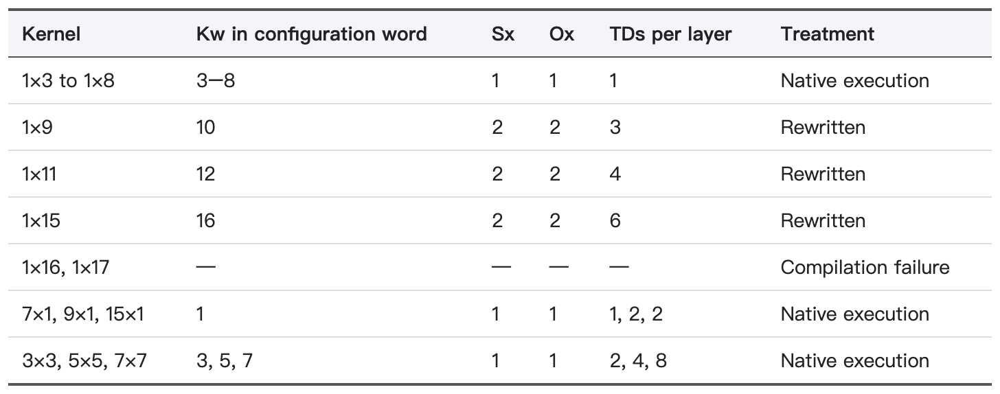
Table 7-6 shows that the largest kernel width that the compiler encodes directly with stride 1 is 8. Below, such kernels are called "native kernels." For kernel widths of 9–15, the compiler rewrites the convolution into a form with horizontal stride 2. The Kw in the configuration word is the kernel width plus one, padded to an even number (9 → 10, 10 → 12, ..., 15 → 16), Sx = 2, and Ox = 2. Each step therefore produces two adjacent output pixels. The output-width field correspondingly becomes half of the actual width, and the weights are stored as two kernel sets offset by one position. After rewriting, the weight amount per input–output channel pair is about 2 × (kernel width + 1). For example, a 1×9 convolution after rewriting corresponds to about 19.3 taps on average. This value is obtained by dividing the weight-segment byte count by (input channels × output channels × 2 B), so it is not an integer number of taps. The values for 1×9, 1×10, and 1×12 (19.3, 21.5, and 25.8) are all below 2 × Kw (20, 24, and 28), which indicates that the two offset kernel sets are not stored in full at these widths. For 1×15 the value is 32.05, comparable to 2 × 16 〔HWX〕. This is because the rewritten kernels use a sparse weight format, in which the zeros produced by padding do not need to be physically stored in the weight segment (Section 7.4.2). When the kernel width reaches 16, the rewritten Kw would exceed 16, and ANECCompile returns an error for 1×16 and 1×17 convolutions. Under Core ML execution, the segmenter determines at the segmentation step that such convolutions cannot be placed on the ANE (Section 5.2), and it places them on the CPU without reporting an error at load time. The test models in this section that consist of such convolutions therefore execute entirely on the CPU, and their per-layer time is 4–7 times that of a 1×15 convolution 〔HWX, timing〕. The upper limit of 15 on FP16 convolution kernel width given by Bryngelson [5] corresponds, in the compiled artifact, to direct stride-1 encoding up to width 8, and to a stride-2 rewrite up to width 15. No such limit applies vertically: kernels of height up to 15 are all encoded directly with stride 1, and 17×1 convolutions also compile. The M4 compilation target h16g and the H17-generation target h17s likewise rewrite 1×9 convolutions into the form Sx = 2, Ox = 2, except that the Kw in the configuration word is written as 9 (0x6008c049). Starting with h18, it is written as 10 (0x6008c04a) (data: tdv/) 〔HWX〕.
The limits above are all derived from the compiler's encoding scheme. The two boundaries of 8 and 16 indicate that the compiler considers the hardware not to support kernels wider than 8 at stride 1, and not to support Kw above 16 at stride 2. We have not executed programs with Kw greater than 8 at stride 1, so we cannot rule out that the hardware itself supports wider kernels and that the compiler chooses rewriting for efficiency or other reasons 〔compiler, inferred〕.
7.4.2 Kernel Shape and Efficiency
To determine the effect of kernel shape on efficiency, we measured chains of 2–24 layers (256 channels, weights shared across layers) for 24 kernel types (1×1 through 1×15, odd-sized kernels from 3×1 through 15×1, 3×3, and 5×5) at four spatial sizes: 4×32, 8×32, 16×32, and 32×32. Because the firmware's task-start events were not recorded in this group of single-ANE experiments, we timed every run uniformly from "submission → last task end," and we fit slopes using only layer counts with the same engine mode (tools: ks4_ktrace.sh, ks4_fit.py; data: ks4_fit.txt, ks4_kt/) 〔kdebug〕. Table 7-7 lists the efficiency of selected kernel shapes relative to the direct-convolution peak (21.1 TFLOPS for a single ANE and 42.3 TFLOPS for two ANEs).
Table 7-7. Efficiency of different kernel shapes relative to the direct-convolution peak
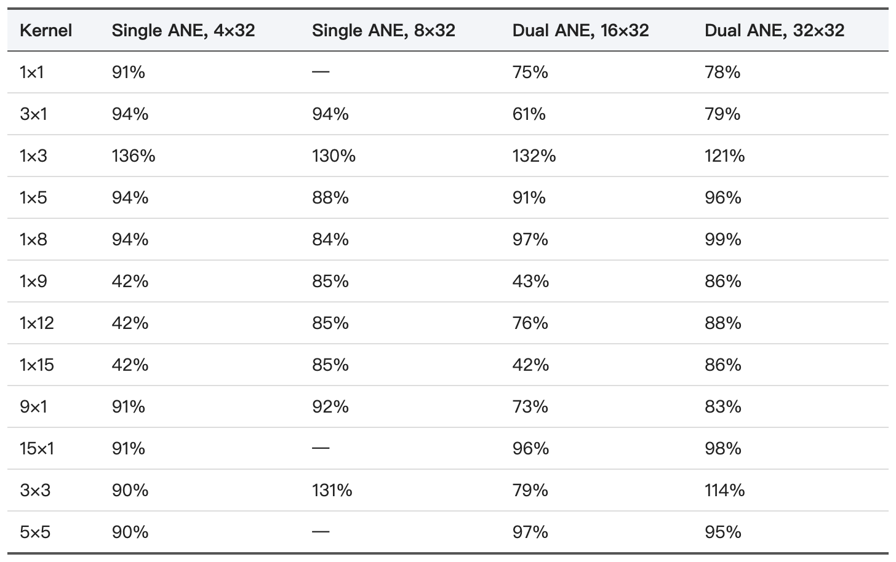
Table 7-7 shows that the kernel shape by itself does not reduce efficiency. Native kernels (horizontal kernels with width no greater than 8, and vertical kernels with height up to 15) reach 90–95% efficiency at the single-ANE 4×32 shape and 84–98% at 8×32. The 1×3 and 3×3 convolutions, whose efficiency exceeds 100%, use the hardware Winograd path (Section 7.4.3). The 1×1 and 3×1 convolutions have lower efficiency in dual-ANE mode (61–79%). Compared with the ideal value obtained by scaling the single-ANE result by the number of rows, the dual-ANE 16×32 shape incurs an additional overhead of about 0.4 µs per layer for 1×1 and 2.8 µs for 3×1. These are much larger than the approximately 0.14 µs cited in Section 10.3, so they cannot be explained by a general cooperation overhead. Possible sources include the overlapping rows read by vertical kernels after row splitting (Section 5.8.3), and other overheads when the computation per layer is small 〔inferred〕. The 9×1 and 3×3 convolutions also reach only 73% and 79% on the dual-ANE 16×32 shape. A "—" in the table indicates that no measurement point exists for this shape in this engine mode, because the compiler selected another mode.
Rewritten kernels (1×9 through 1×15) show a completely different pattern: the time per layer is proportional to the amount of weights and independent of the number of rows. For example, the 1×9 convolution has the same per-layer time at 4×32 and at 8×32 (17.00 µs and 16.89 µs, respectively), so its efficiency at 4×32 is only half of that at 8×32. Using the per-layer time and a weight-read bandwidth of 150 GB/s to back-calculate the number of taps per channel pair, we obtain 19.3, 23.5, and 32.0 for 1×9, 1×11, and 1×15, respectively. These differ from the weight amounts read from the compiled artifact by less than 0.5%. Rewriting doubles the weight amount per layer, to 2.5–4.2 MB, which far exceeds the 64 KiB per-NE resident limit, so the weights must be reread for every layer.
However, these layers are not limited by DRAM weight-read bandwidth. After quantizing the weights of the 1×9 convolution to Int8, the per-layer time does not shorten (Section 7.5). Therefore, the time of the rewritten kernels is proportional to the number of weight elements rather than to the number of weight bytes. The bottleneck is a stage metered per weight element, at a rate of about 75 billion weights per second. The relation "FP16 weight bytes ÷ 150 GB/s" agrees with the measurement only because, when converted at FP16, this rate happens to be close to the weight-read bandwidth 〔kdebug, HWX, inferred〕. Sections 10.4 and 10.7 show that when both engines execute this type of layer simultaneously, they slow each other down, which indicates that the stage is shared by the two engines.
Native kernels whose weights exceed 64 KiB likewise must be reread for every layer. For example, 3×3, 5×5, and 11×1 through 15×1 convolutions at 4×32 imply back-calculated weight-read rates of 148–150 GB/s. For native kernels, the 2048-channel 1×1 convolution of Section 7.5 confirms that the time does vary with the number of weight bytes. The efficiency of these shapes is almost exactly 90%, because 4×32 (128 pixels) lies at the balance point between computation and weight reading: each FP16 weight read supports 128 MACs, and full-speed computation requires about 165 GB/s of weight-read bandwidth.
Field tracing and disassembly of the compiler offer a possible explanation for this bottleneck. When deciding the weight format, the compiler computes the fraction of zeros introduced by rewriting, and it switches to a sparse weight format when this fraction exceeds 1/7. There are also cases, such as dilated convolution, in which the upstream stage directly marks the layer as "must compress." According to the estimate of the compiler function CalculateSparsityFromPadding, the padding fraction after rewriting a stride-2 convolution is 0.4375, and that of the rewritten kernel of width 9 is 0.55. Both exceed the threshold. This is the ratio that the compiler derives from the rewriting method. When back-calculated from the size of the weight segment in the compiled artifact, the padding zeros amount to only about 6–10% of the elements actually stored by the rewritten kernel (for 1×9, 2 of 20 elements). This shows that the decision is based on the estimated value, not on the zeros actually stored. Ordinary 3×3 and 5×5 convolutions have no padding and do not use the sparse format 〔compiler〕. In other words, rewritten kernels of width 9–15, dilated convolutions, stride-2 convolutions, and bilinear upsampling all execute sparse weights on the hardware, relying on the zero-skipping hardware described in Section 7.5 to avoid the padding zeros. This explains two phenomena of rewritten kernels: their weight segments are smaller than two full kernel sets, and the throughput of dilated convolution is markedly lower than that of an ordinary 3×3 convolution (Section 7.4.3). We further conjecture that the shared stage described above, metered per weight element, is the decoding stage of the sparse weights. It processes compressed weights on an element basis, so quantizing to Int8 cannot speed it up, and it contends between the two ANEs when both are in use 〔inferred〕. This conjecture is compatible with the observation in the pruning experiments of Section 7.5 that the speedup does not reach the non-zero fraction. In this decision, the compiler considers only the zeros introduced by rewriting and does not scan the weights for zeros. Zero weights written as ordinary constants therefore do not trigger the sparse format (Section 7.5).
Under dual-ANE execution, the efficiency of rewritten kernels depends on the splitting method. The 1×9, 1×10, 1×11, and 1×15 convolutions at 16×32 are split by rows, so both ANEs read a full copy of the weights and share the above bottleneck, and their efficiency is only 42–43%. The 1×12 through 1×14 convolutions are split by output channel, with efficiency of 73–77% (Section 10.4, defect B9).
7.4.3 Hardware Winograd
On a 3×3 convolution chain with 512 channels and a 16×16 spatial extent, the FP16 marginal throughput of a single ANE reaches 31.0 TFLOPS, which is 1.47× the direct-convolution peak. By contrast, a 3×3 convolution with dilation rate 2, which cannot use Winograd, achieves only 14.6 TFLOPS per ANE, about 70% of the direct-convolution peak (data: h10_w8a8_k3.txt, h10_dilation.txt) 〔timing〕. The weight-segment size in the compiled artifact is exactly 512 × 512 × 9 × 2 bytes, which means that the raw 3×3 weights are stored and the Winograd transform is performed in hardware. This is consistent with the conclusion, reached by Bryngelson [5] through reverse engineering, that the Winograd transform matrices are fixed in hardware 〔HWX〕. F(2×2, 3×3) would theoretically reduce the number of multiplications to 1/2.25, and the measurement achieves about 65% of this theoretical speedup. 1×3 convolutions also exceed the direct-convolution peak, corresponding to the one-dimensional Winograd bit (1DWinograd, bit 27) in the TD task information word 〔HWX〕.
The compiler's performance estimation model does not take the Winograd transform into account. For the TD of a 3×3 convolution with 512 channels and 16×16, exe_cycles is 58 per layer, and the performance model estimates 58.8 µs per layer. The measured value, obtained in this section and in Section 7.5 over two rounds, is 39–44 µs per layer. This is about 1.3–1.5 times faster, which is comparable to the speedup from Winograd (Section 7.8) 〔compiler, timing〕. Furthermore, Winograd is not enabled for all 3×3 convolutions. Field tracing shows that, among the 3×3-type convolutions traced, the Winograd bit in the task information word is 1 only for ordinary 3×3 and grouped 3×3 convolutions. Depthwise convolution, 5×5, dilated convolution, and stride-2 convolution all have 0 (Table 5-13), which is consistent with the measured results for dilated convolution above 〔compiler, timing〕. However, on a 3×3 convolution chain with 256 channels and an 8×16 spatial extent, the marginal throughput is only 15.3 TFLOPS. This indicates that even for ordinary 3×3 convolutions, some shapes do not use Winograd. The conditions that determine this for the shape are not established in this report.
7.5 Low-Precision and Compressed Weights
We used coremltools to generate two low-precision models. The W8A8 model quantizes the activations with linear_quantize_activations using calibration, and simultaneously quantizes the weights to Int8. The W8 model quantizes only the weights to Int8 and leaves the activations in FP16 (tool: w8a8.py). Table 7-8 gives the marginal throughput of W8A8 and FP16 for three shapes (data: h10_w8a8_slope.txt, h10_w8a8_k3.txt) 〔timing, IOReport〕.
Table 7-8. Marginal throughput of W8A8 and FP16
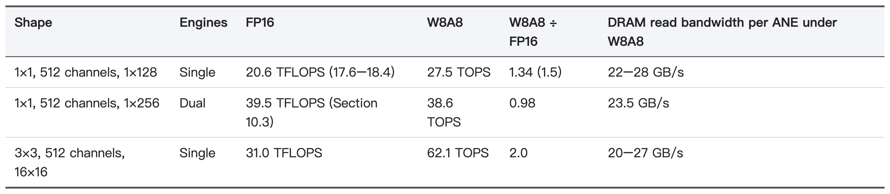
In the compute-dense 3×3 convolution, the throughput of W8A8 is exactly 2 times that of FP16, which agrees with the INT8 MAC width inferred in Section 7.2.2. Including Winograd, the effective throughput of W8A8 on a single ANE reaches 62.1 TOPS. However, this 2× advantage does not extend to the 1×1 convolution chain. On a single ANE, W8A8 is only about 1.3–1.5 times faster than FP16, and on dual ANEs it is essentially equal to FP16. The range of the single-ANE speedup arises from differences in fitting intervals. The W8A8 throughput slope is fitted from data over 128–384 layers, whereas the FP16 throughput of 20.6 TFLOPS given above uses data over 256–384 layers, which corresponds to a speedup of about 1.3. If the fit uniformly uses 128–384 layers, the FP16 throughput in the same data file is 17.6–18.4 TFLOPS (the values in parentheses in the table), which corresponds to a speedup of about 1.5. Because the measurement points at 128 and 384 layers lie in different host wake-up states (Section 6.5.3), both conventions carry a certain degree of error. Both yield speedups clearly below the ideal 2× (data: h10_w8a8_slope.txt). The IOReport bandwidth data provide a clue to this difference. The DRAM read bandwidth in the FP16 test is nearly zero, which indicates that the activation tensors can remain resident in the on-chip cache. By contrast, the W8A8 convolution chain produces a sustained DRAM read traffic of about 22–28 GB/s per ANE. Because the layers share weights and the total weight amount is only about 260 KB, this traffic is unlikely to come mainly from weight reads. Further, back-calculating from the read bandwidth and the single-layer execution time, each ANE reads about 64–81 KB per layer, which is of the same order as the 64 KB of Int8 activation data that one layer processes. The compiled artifact further shows that each W8A8 layer is split into three types of TD: input quantization (PE), convolution, and output dequantization. Combined with the above bandwidth characteristics, we infer that quantization and dequantization break the on-chip activation residency of the FP16 convolution chain, so activations pass through DRAM between layers. The performance of 1×1 convolutions is therefore progressively limited by activation data movement, and it cannot fully realize the 2× throughput advantage of the INT8 MAC array 〔timing, IOReport, HWX, inferred〕.
However, this explanation does not fully close quantitatively. The measured read bandwidth of 22–28 GB/s is still below the activation-path limit measured in Section 9.4.2 (about 35–40 GB/s per ANE), and the write traffic in IOReport is close to the noise floor. This does not fully match a simple model in which activation data must be written back to DRAM in full. Therefore, the existing evidence supports that the W8A8 1×1 convolution is affected by additional data-movement overhead, but it is not sufficient to determine the complete path of these traffic streams or their specific bottleneck.
Quantizing only the weights (W8) does not raise the MAC peak. The compiler's performance model gives W8 the same MAC efficiency as FP16 (Section 7.2.2), so on compute-bound layers W8 gives no speedup. On a 1×1 convolution chain with 512 channels and 32×32 (about 32 KiB of weights per NE, resident on chip), W8 and FP16 take nearly identical time (1011–1012 µs for 48 layers each). This agrees with the above performance model and with the conclusion of maderix [4] on the M4 (260.4 µs for Int8 weights and 260.5 µs for FP16 weights) (data: b6_q8_run.txt) 〔timing〕. The effect of W8 is to reduce the number of bytes read for weights and the occupancy of the weight buffer. A 3×3 convolution with 512 channels can accommodate 224 output channels per TD under W8, but only 96 under FP16. Under W8, each NE takes 14 × 512 × 9 × 1 B = 63 KiB per pass, which remains within 64 KiB. Under FP16, each NE has only 6 output channels per pass (54 KiB), whereas 64 KiB would allow 7 〔HWX〕. However, "not raising the MAC peak" does not mean "not improving model speed." For weight-read-bound layers, a narrower weight format may shorten the weight-reading time in proportion to the number of bytes.
To measure this gain directly, we constructed a weight-read-bound native shape: a 1×1 convolution with 2048 input and 2048 output channels, a spatial extent of 32 pixels, and distinct weights in each layer. The FP16 weights of each layer amount to about 8.4 MB, of which each NE receives 512 KiB, far exceeding the 64 KiB resident limit. At about 150 GB/s, reading the weights takes about 56 µs, whereas the computation takes only about 13 µs. Using coremltools, we generated several versions from the same FP16 weights: W8, 6-, 4-, 3-, and 2-bit palettization, grouped-channel palettization (4-bit), int4 block-wise quantization, and vector palettization (cluster_dim of 2 and 4). For each version we took 16 and 32 layers and obtained the per-layer time from the difference in kdebug task duration (tools: wfmt_gen.py, wfmt.sh, wfmt_fit.py, hwx_kern.py; data: wfmt.txt). The results are shown in Table 7-9 〔kdebug, HWX〕.
Table 7-9. Effect of weight format on weight-read-bound layers (1×1 convolution, 2048 channels, 32 pixels, distinct weights per layer)
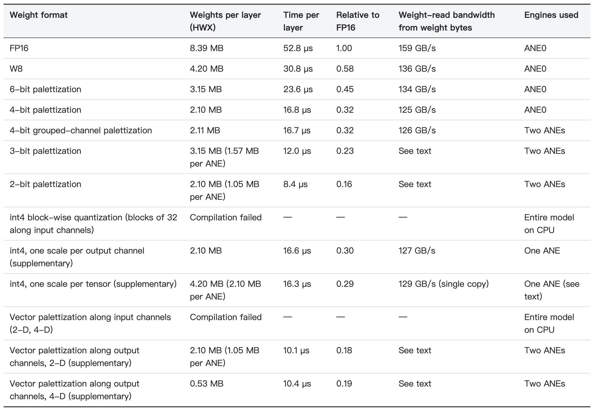
The four rows marked "supplementary" are supplementary measurements on macOS 27.2.1. The per-layer time is the slope of the Core ML per-call time between 16 and 32 layers, and the relative time uses FP16 measured in the same batch (55.5 µs) as the reference; see below.
Table 7-9 shows that, on weight-read-bound native layers, the hardware reads the compressed weights directly. The weights in the compiled artifact remain in compressed form, and the single copy stored by one ANE shrinks exactly in proportion to the bit width. The per-layer time decreases with the number of weight bytes. For the formats that use only one ANE, the bandwidth computed from weight bytes lies between 125 and 159 GB/s, which is comparable to the weight-read bandwidth measured in Section 9.3. This shows that the weights are not expanded to FP16 before being read. Compared with FP16, W8 shortens the per-layer time by 42%, 4-bit palettization by 68%, and 2-bit palettization by 84% 〔kdebug, HWX〕. The equivalent bandwidth of the compressed formats (125–136 GB/s) is slightly lower than that of FP16 (159 GB/s). This indicates that the compressed formats carry a small amount of additional per-layer time that does not scale with byte count, possibly from table lookup or dequantization. This report does not decompose it further 〔inferred〕. The 2-bit, 3-bit, and grouped palettization models are split by the compiler across two ANEs, whereas the FP16, W8, 4-bit, and 6-bit models of the same shape use only ANE0. For the 2-bit and 3-bit palettization, the compiled artifacts store a complete copy of the weights for each engine, so the weight segment per layer is twice the size of a single copy. The weight segment of the grouped palettization is not doubled, which we conjecture reflects output-channel splitting (data: kern_all_h18g.txt) 〔HWX, inferred〕.
This raises an unresolved contradiction. If both engines read their own complete copy from DRAM, the combined read rate implied by the per-layer times of 8.4 µs (2-bit) and 12.0 µs (3-bit) is 250–262 GB/s. This exceeds the theoretical DRAM bandwidth of 170.5 GB/s (Section 9.5), which is impossible. Therefore, either each engine reads only part of its own copy, or one of the copies is served from on-chip storage or the SLC. This report has not determined which. If computed per single copy, the effective bandwidth is 125–131 GB/s, comparable to that of the compressed format on a single engine 〔kdebug, inferred〕.
The int4 block-wise quantization and vector palettization models were originally generated with the "along input channels" parameters shown in the table: int4 with one scale per block of 32 consecutive input channels, and vector palettization with vectors of 2 or 4 weights formed along the input channels. These models can be generated normally at the Core ML level, but the ANE compiler cannot compile them. Core ML therefore places the entire model on the CPU, at about 66 µs per layer, which is even slower than FP16 on the ANE 〔HWX, timing〕. The compilation interface only returns failure and gives no reason. By intercepting the compiler's error-level log in our own compilation process, we obtained its MIL validation report (tool: oslogtap_all.c; data: anecc_reject.txt). For int4 block-wise quantization the report reads "ANE only support per-cout/per-tensor quantization", that is, only one scale per output channel or one scale per tensor is accepted. For vector palettization it reads "vector palettization is only supported at Cout for ANE", that is, vectors may be formed only along the output channels. The compilation failures therefore come from the generation parameters, not from a lack of ANE support for these two formats 〔compiler〕.
Four versions regenerated under these two constraints all compile and execute on the ANE: int4 with one scale per output channel, int4 with one scale per tensor, and 2-D and 4-D vector palettization along the output channels, with the 16 codewords of the vector palettes obtained by k-means (tools: wfmt_gen.py, wfmt2_time.sh; data: time.txt, kern.txt). These supplementary measurements were made on macOS 27.2.1 with ANE compiler 10.205.4, an environment different from that of Section 3.1. Because the machine had slept beforehand, all kdebug firmware task events were lost, so the supplementary measurements use the slope of the Core ML per-call time between 16 and 32 layers, averaged over one forward-order and one reverse-order round. FP16, W8, and 4-bit palettization measured in the same batch take 55.5, 28.0, and 16.3 µs per layer, within 10% of the kdebug values in the table, so the relative times in the supplementary rows use the FP16 of the same batch as the reference 〔timing, HWX〕.
Both int4 scaling schemes are as fast as 4-bit palettization, at about 0.3× the FP16 per-layer time, and the read bandwidth computed per single copy of the weights is 127–129 GB/s, comparable to the other compressed formats 〔timing, HWX〕. For the version with one scale per tensor, the compiler additionally generates a dual-ANE program that actually uses both engines, with each engine storing its own copy of the weights. In IOReport, however, only one ANE shows interrupts, which does not match the rule in Chapter 10 that the runtime executes a dual-ANE program whenever it contains work for ANE1; this remains to be confirmed with firmware timestamps 〔IOReport, HWX〕. Both vector palettizations are split across two ANEs. The 2-D version uses 2 bits per weight and stores a complete copy of the weights for each engine, as with 2-bit and 3-bit palettization. The 4-D version uses 1 bit per weight and its weight segment is not doubled, which we conjecture reflects output-channel splitting, as with grouped palettization 〔HWX, inferred〕. Both take about 10 µs per layer, 0.18–0.19× FP16, and the 4-D version is no faster than the 2-D version, indicating that the layer is no longer weight-read bound at this point: 0.27 GFLOP per layer takes about 6.8 µs at the dual-ANE 39.5 TFLOPS, which together with the fixed per-layer overhead matches the measurement 〔timing, inferred〕.
We checked whether the ANE decompresses correctly on single-layer models (tool: wfmt_err.py; data: err_L1.txt). For all formats, the relative error between the outputs on the ANE and on the CPU is between 0.56% and 0.68%, the same as for FP16 itself (0.66%), showing that the ANE decompresses int4 and vector palettization correctly 〔timing〕. The loss from compression itself is measured by the reconstruction error of the same weights (tool: wfmt_werr.py; data: werr.txt). The relative error is 0.8% for W8, and 6.4%, 15.3%, 23.9%, and 38.1% for 6-, 4-, 3-, and 2-bit palettization. int4 with one scale per output channel gives 15.0%, comparable to 4-bit palettization, and one scale per tensor gives 22.1%. The 2-D vector palettization along output channels gives 33.2%, slightly better than scalar palettization with the same 2 bits per weight, and the 4-D version gives 59.0%. The weights here are independent and identically distributed random numbers with no correlation between channels, so the error of vector palettization is on the pessimistic side, and its accuracy on real models needs to be evaluated separately. The HAL parameter table enables vector palettization for the M6 (Section 15.3), and these results show that it is indeed usable on the ANE and can bring the time of weight-read-bound layers down to about one fifth of FP16.
As a control, we performed the same comparison on the rewritten kernel of Section 7.4.2 (1×9 convolution, 256 channels, 4×32). W8 reduces the per-layer weight amount from 2.54 MB to 1.33 MB, and the lower bound of DRAM read bandwidth from IOReport is also nearly halved. However, the per-layer time changes from 17.0 µs to 17.8 µs, that is, it does not shorten (data as above) 〔kdebug, IOReport〕. This indicates that the bottleneck of the rewritten kernel is not DRAM byte bandwidth. Section 7.4.2 discusses the implications of this result.
We also examined the effect of sparsity, addressing three questions: whether pruned weights are read in compressed form, whether the compute array skips the MACs of zero weights, and whether it skips zero activations. The models start from the same FP16 baseline weights. coremltools' prune_weights generates unstructured pruning at 50%, 75%, and 90%, as well as structured 2:4 and 1:4 versions. For the weight-read-bound m2048, we additionally apply joint compression of "50% pruning followed by 4-bit palettization." The compute-bound shapes are a 1×1 convolution chain with weights resident on chip (512 channels, 1×128) and a 3×3 convolution chain (512 channels, 16×16). On the M6, the slope is computed from the "driver submission → task end" duration in kdebug. On the M4, the slope is computed from per-call time. Each machine was tested in two rounds (tools: sparse_gen.py, sparse.sh, sparse_fit.py, sparse_err.py; data: sparse.txt) 〔kdebug, HWX, timing〕.
First, pruned weights are stored and read in compressed form. The weight segment in the compiled artifact consists of non-zero values plus a mask of 1 bit per element. At 50%, 75%, and 90% pruning, the segment is 0.56, 0.31, and 0.16 times the size of the dense segment, respectively. On the weight-read-bound m2048, the per-layer time is proportional to the compressed byte count. The weight-read bandwidth computed from bytes is about 150 GB/s on the M6 and about 67 GB/s on the M4, which coincide with the weight-read limits of the two machines. On the M6, the per-layer time at 90% pruning is 0.16 times that of the dense version, and 50% pruning combined with 4-bit palettization gives 0.24 times, so the two kinds of compression can be combined 〔HWX, kdebug〕. Figure 7-2 plots the per-layer time against the compressed weight bytes for the various weight formats. The quantization, palettization, and pruning points all lie close to a single weight-read limit line, whereas the rewritten kernel does not lie on it.
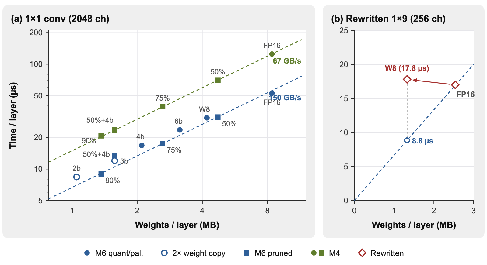
Figure 7-2. Per-layer time of weight-read-bound layers as a function of per-layer weight bytes. (a) 1×1 convolution (2048 channels, 32 pixels, distinct weights per layer) on log–log axes. The horizontal axis is the compressed weight-segment size per layer in the compiled artifact, and the dashed line is the time predicted from the weight-read limit (about 150 GB/s on the M6 and about 67 GB/s on the M4). The 2- and 3-bit palettizations are split across two ANEs, and each engine stores a complete copy of the weights, so the horizontal axis uses the single-copy size (open markers). (b) Rewritten 1×9 kernel (256 channels, 4×32): W8 halves the weight bytes but leaves the time unchanged, differing by a factor of two from the 8.8 µs predicted from bytes (Section 7.4.2). The M6 times come from kdebug (firmware task duration for quantization and palettization; driver submission to task end for pruning), and the M4 times are Core ML per-call times. All are slopes over 16 and 32 layers (data: wfmt.txt, sparse.txt).
Second, the compute arrays of both the M6 and the M4 skip the MACs of zero weights. Table 7-10 lists the results for the 1×1 convolution chain with weights resident on chip.
Table 7-10. Effect of pruning on a compute-bound 1×1 convolution chain (512 channels, 1×128, weights resident on chip). The dense version takes 3.45 µs per layer, about 6% slower than the 3.26 µs of Section 7.2.1. The two values come from different rounds and use different timing conventions. Here the values are the slopes, over 32 and 128 layers, of the submission-to-task-end duration in kdebug.
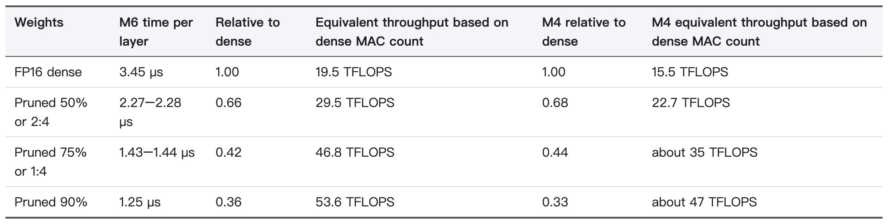
Based on the original dense MAC count, the equivalent throughput of the M6 at 75% and 90% pruning reaches 46.8 and 53.6 TFLOPS, which is 2.2 and 2.5 times the single-engine direct-convolution peak of 21.1 TFLOPS. Because the weights in this test are resident on chip, the performance gain cannot be explained by a reduction in weight reads. It therefore indicates that the compute array itself skips the MACs that correspond to zero weights. The zero-skipping efficiency has no clear relation to whether pruning is structured. At 50% pruning, 2:4 and unstructured pruning give essentially the same performance; at 75% pruning, 1:4 and unstructured pruning likewise match. On the other hand, the speedup is not inversely proportional to the non-zero fraction. When the non-zero fraction decreases from 0.5 to 0.25 and 0.1, the relative time decreases only from 0.66 to 0.42 and 0.36. This deviation may come from imbalance in the compressed weight length allocated to each NE, from fixed per-layer overheads, and from the decoding throughput limit of sparse weights 〔inferred〕.
The compiled artifact further confirms the zero-skipping mechanism of the hardware. Register 0x1240 in the convolution TD is the weight configuration word. Checking it bit by bit against the functions in the compiler that write each field, bits 0–1 specify the weight data type, bit 2 and bits 4–7 control the palettization and its bit width, bit 8 (KernelSparseFmt) indicates the use of the sparse weight format, and bit 28 (KernelDetectZeros) controls runtime zero-weight detection. After pruning, this register changes from 0x10000082 to 0x182. That is, KernelSparseFmt is set and KernelDetectZeros is cleared. The corresponding sparse-format flag also appears in the weight DMA configuration register 0x1540. This shows that the pruned model does not dynamically detect zeros in dense weights. Instead, the weights are encoded in sparse format at compile time, and the hardware directly executes the compressed weight stream.
This change is also reflected in the weight layout and the execution cycles. The dense model assigns each NE a fixed 32 KiB of weights, whereas after pruning each NE receives a compressed weight segment of different length. At the same time, exe_cycles in the TD header drops from 3 to 1 per layer, although the per-TD estimate of the performance model does not change accordingly (Section 7.8) 〔HWX, compiler〕.
The premise for skipping zero weights is that the weights are supplied to the compiler in sparse format, and the pruning interface of coremltools generates this format. If the zeros in the weights are written into the model as ordinary dense constants, the compiler does not switch to the sparse format even when 50%–100% of the weights are zero. The weight segment, register 0x1240, and estimated cycles are then identical to those of random weights (tool: kfmt_gen.py) 〔HWX, compiler〕. Dense-format layers have an additional zero-weight detection bit, which the compiler decides per layer. On the M6's target h18g, dense convolutions with weights resident on chip (including W8 and palettization) set this bit, whereas m2048, whose weights differ per layer and are read from DRAM, does not. On the M4's target h16g, the compiler does not set this bit for any convolution. The switch that determines this is the bit at offset 0x72c in the HAL parameter table, which has been 1 since H17 (the M5 generation) (Section 15.3) 〔HWX, compiler〕. We measured on the M4 that dense models with 50%–100% zero weights are only 4–8% faster per layer than models with random weights, whereas the sparse format at 75% pruning takes about half the time. Because the M4 does not enable zero-weight detection, this result only shows that dense zero weights barely speed up without zero-weight detection 〔timing〕.
The 3×3 convolution behaves differently. After pruning, the compiler no longer uses Winograd. The Winograd bit in the task information word is cleared, the output-channel grouping changes from 2 to 16, and the number of TDs per layer changes from 6 to 2. The compiler instead uses direct convolution plus zero skipping. Therefore, 50% pruning is slower than the dense version by 5–15%, and benefits appear only at 75% pruning or above. At 90% pruning, the time is 0.32–0.34 times that of the dense version, equivalent to about 87 TFLOPS by dense MAC count 〔HWX, kdebug〕. Part of the weights of the 3×3 convolution chain must be read from DRAM, and a few tasks take significantly longer, which raises the mean task duration by 5–25%. The comparisons above use medians. When means are used, the order of the versions by speed does not change 〔kdebug〕.
Figure 7-3 plots the results of both convolutions on the M6 and the M4 together.
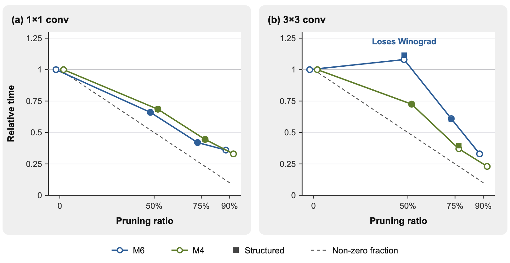
Figure 7-3. Pruning ratio and per-layer relative time for compute-bound layers with weights resident on chip (average of the two passes of the second round). (a) 1×1 convolution chain: both the M6 and the M4 shorten time as the pruning ratio increases. Unstructured (circles) and structured (squares) pruning nearly coincide, but both are slower than the ideal case (dashed) in which time scales with the non-zero fraction. (b) 3×3 convolution chain: once pruned, the M6 no longer uses hardware Winograd, so 50% pruning is 5–15% slower than dense, and benefits appear only at 75% pruning or above. On the M4, pruning yields benefits from 50% onward. Whether the dense 3×3 convolution on the M4 uses Winograd is not determined in this report (data: sparse.txt).
Third, the compute array does not skip zero activations, although zero activations substantially reduce power consumption (see Section 13.3). Changing only the input cannot measure this, because zeros in the input are mixed away after the first convolution. For this reason, we introduce after each convolution a fixed mask shared across layers. The mask directly controls the fraction of zeros in the next layer's input, while the graph structure and the weights remain unchanged. Multiplying by the mask itself adds about 1 µs of fixed overhead per layer (the 1×1 chain on the M6 takes about 4.4–4.5 µs per layer, whereas the dense version in Table 7-10 takes 3.45 µs). Masked models are therefore compared only with one another. Whether the fraction of zeros in each layer's input increases from 0% to 90%, or half of the channels are entirely zero, the time is the same. On the M6, the 1×1 chain differs by only about 2.4% between "with zeros" and "without zeros," and this difference is independent of the fraction. The differences for the M4 and for the 3×3 chain are both within measurement noise 〔kdebug〕. The 3×3 chain is sensitive to the order of measurement. To reduce the systematic drift caused by measurement order, we executed the complete test sequence in forward and in reverse order, thereby eliminating drift due to measurement order 〔kdebug〕. The ANE outputs of all pruned models agree with the results of running the same pruned models on the CPU, with an error no greater than that of the dense versions.
In summary, weight-only quantization, palettization, and pruning all leave the dense peak of the MAC array unchanged. However, on native layers limited by DRAM weight-read bandwidth, each can shorten the time approximately in proportion to the compressed byte count. Pruning can additionally skip the MACs of zero weights on compute-bound layers, without requiring a structured sparsity pattern. For workloads such as large language model decoding, reducing the bit width per weight or removing some weights can shorten the time of weight-read-bound layers in proportion to byte count. However, end-to-end decoding is also limited by call count and host overhead (Section 14.3), so this is only one route to speedup.
References
[4] maderix. Inside the M4 Apple Neural Engine, Part 4: The Complete Machine. https://maderix.github.io/articles/inside-the-m4-ane-part-4/, 2026.
[5] S. H. Bryngelson. Apple Neural Engine: Architecture, Programming, and Performance. arXiv:2606.22283, 2026.